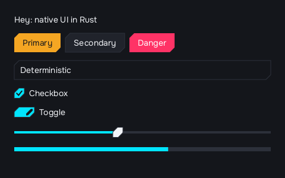
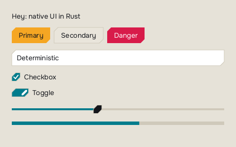

Hey is a Rust UI framework built around one idea: your view is a pure function of your model. Flexbox layout, design-token themes, a CPU reference renderer and a wgpu one, with accessibility and i18n from day one.
enum Msg { Inc, Dec } fn update(n: &mut i32, m: Msg) { match m { Msg::Inc => *n += 1, Msg::Dec => *n -= 1, } } fn view(n: &i32) -> View<Msg> { column([ label(format!("Count: {n}")), button("+").on_click(Msg::Inc), ]) } // OS event -> Msg -> update -> view -> layout -> paint
Everything between the OS window and the pixel, in one workspace of 12 crates.
One model, one update, one view. Views are reconciled into an arena with generational node ids.
Our own flex engine with scroll containers, clipping, wheel bubbling and draggable scrollbars.
Themes live in themes.json: colors, chamfers, motion. Hot-reload them while the app runs.
A pixel-exact CPU reference backend and a wgpu GPU backend. Golden screenshots keep both honest.
AccessKit tree, keyboard focus, IME input, high contrast and reduced motion read from the OS.
Fluent localization, bidi text, DPI scaling end to end, platform-aware shortcuts.
Windows, release build, examples/counter.
These images are rendered by a test with Ui::render_png, without a window. The bytes are the same on every platform.


Chamfered corners, flat controls, high contrast. Three themes ship in the box.
Hey is made by Vitaly Golik (GLK-Dev) with strict tests: property tests, golden screenshots and benchmarks gate every change. Star it, read the ADRs, or build something.